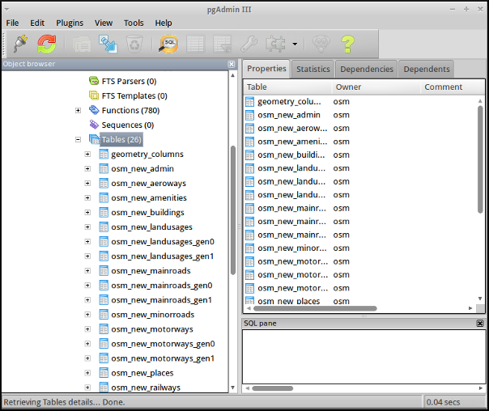
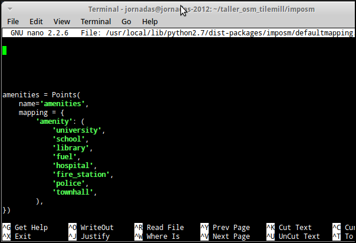

Note
Autores:
Licencia:
Excepto donde quede reflejado de otra manera, la presente documentación se halla bajo licencia Creative Commons Reconocimiento Compartir Igual
A continuación se detalla una práctica guiada en la que se verán los detalles básicos del manejo de la aplicación ImpOSM.
Se espera del lector que vaya ejecutando las instrucciones que se detallan a continuación y en caso de duda pregunte al facilitador.
Para trabajar con los datos primero crearemos una carpeta con la copia del juego de datos del taller.
Abrimos una terminal y cambiamos al directorio tecleando
$ cd /home/jornadas/taller_osm_tilemill/
Creamos un nuevo directorio y accedemos a el
$ mkdir tallerimposm
$ cd tallerimposm
y copiamos los datos al directorio
$ cp ../../datos/UniversitatGirona.osm .
Este juego de datos es una copia de la zona que trabajamos en el taller anterior.
El primer paso para la carga de datos es la creación de la base de datos que se hace utilizando el comando imposm-psqldb, este comando nos devuelve una estructura de datos para la base de datos PostGIS, lo mejor es asignar una salida directa del comando a un archivo de texto.
$ imposm-psqldb > create-db.sh
A continuación editamos el archivo create-db.sh para comprobar si las rutas a los scripts de PostGIS y al archibo pg_hba.conf son correctas.
$ gedit create-db.sh
En una instalación estándar de Ubuntu estos archivos se encuentran en:
/usr/share/postgresql/8.4/contrib/postgis-1.5/postgis.sql
/usr/share/postgresql/8.4/contrib/postgis-1.5/spatial_ref_sys.sql
/etc/postgresql/8.4/main/pg_hba.conf
Guardamos el archivo con y salimos de gedit.
A continuación ejecutamos el script crate-db.sh, pero hay que hacerlo como usuario postgres por lo que teclearemos las instrucciones siguientes:
$ sudo su postgres
$ bash create-db.sh
$ exit
$ sudo service postgresql restart
A partir de este momento contamos con una base de datos PostgresSQL con la extensión PostGIS llamada osm y que tiene un usuario que se llama osm y cuya contraseña es osm.
Podemos proceder a la primera importación de datos que realizaremos haciendo los tres pasos por separado:
Se realiza empleando el comando:
$ imposm --read UniversitatGirona.osm
Como la cantidad de datos no es muy grande, solo tardará unos segundos.
Una vez acaba podemos comprobar que ha creado los archivos de cache listando los archivos del directorio:
$ ls
create-db.sh imposm_coords.cache imposm_nodes.cache imposm_relations.cache imposm_ways.cache UniversitatGirona.osm
ImpOSM ha generado los archivos .cache que son archivos binarios con los datos preparados para ser incluidos en la base de datos.
Se realiza empleando el comando:
$ imposm --write --database osm --host localhost --user osm
Solicitará la constraseña del usuario osm y cargará los datos que hay en los archivos .cache.
Podemos investigar qué ha hecho ImpOSM lanzando la aplicación pgAdmin III que está instalada en la máquina virtual en el menú Development. Podemos comprobar que ha creado 24 tablas nuevas, todas con el sufijo new_
El esquema de tablas y qué etiquetas ha importado son los estándar ya que aún no hemos cambiado los mappings. En concreto podremos encontrar:
También vienen unas tablas con geometrías de las vías de transporte generalizadas en función de dos tolerancias y unas vistas que agrupan todas las carreteras.
El último paso de la carga de datos sería la optimización de los datos que se realiza empleando el comando:
$ imposm --optimize -d osm
En realidad los tres pasos anteriores se pueden ejecutar en un solo comando:
$ imposm --read --write --optimize -d osm UniversitatGirona.osm
El flujo de trabajo recomendado permite el despliegue de las tablas conservando hasta 3 versiones a la vez del mismo juego de datos. El despliegue se inicia al ejecutar el comando:
$ imposm -d osm --deploy-production-tables
Podremos comprobar con pgAdmin III como se ha cambiado el nombre de todas las tablas perdiendo el prefijo new_.
Cuando se suban unas nuevas tablas y se deplieguen, las tablas que no tengan prefijo pasarán a tener el prefijo old_.
Y para borrar definitivamente las tablas marcadas con old_ y las marcadas con new_ se emplea el comando:
$ imposm -d osm --remove-backup-tables
Note
Para resolver esta parte te recomendamos volver a mirar el punto Cambiando el esquema por defecto tratada en el bloque anterior
ImpOSM trae un esquema de datos por defecto que separa los fenómenos en varias tablas en función de algunas de las etiquetas más usadas de OSM, sin embargo el esquema es generalmente insuficiente ya que se suele emplear un abanico de datos mucho más ámplio.
Por ejemplo, en nuestro caso no se está incluyendo en la base de datos ningún registro de los siguientes tipos y subtipos:
Por lo que debemos modificar el archivo de mapping para que los incluya. El archivo mapping se encuentra en la siguiente localización:
/usr/local/lib/python2.7/dist-packages/imposm/defaultmapping.py
lo copiamos y editamos empleando los siguientes comandos:
$ cp /usr/local/lib/python2.7/dist-packages/imposm/defaultmapping.py mappingudg.py
$ gedit mappingudg.py
Buscamos la cadena amenities = Points usando el comando buscar de gedit al que se llama con la combinación de teclas Ctrl + F.
Como podemos ver, ImpOSM por defecto tiene determinados tipos de Amenity cuando son puntos pero no tiene ninguno de los indicados en la lista referida un par de párrafos más arriba.
Vamos a añadir al argumento mapping los elementos que le faltan (no importa el orden) respetando la sintaxis de tuplas de Python de forma que quede de la siguiente manera:
amenities = Points(
name='amenities',
mapping = {
'amenity': (
'university',
'school',
'library',
'fuel',
'hospital',
'fire_station',
'police',
'townhall',
'restaurant',
'pub',
'cafe',
'place_of_worship',
'parking',
),
})
El caso de los árboles (natural/tree) es distinto ya que por defecto ImpOSM no incluye un mapping para la clave Natural, por lo que la crearemos desde cero, justo debajo del objeto amenities vamos a crear un nuevo objeto para poder importarlos.
Si observamos el juego de datos usando JOSM veremos que los árboles tiene además del par clave/valor que los define, algunos pares de claves/valor más, de todos ellos solo nos interesa el campo type pero en caso de existir ese campo lo crea por defecto ImpOSM por lo que no es necesario escribirlo explícitamente en la definición:
arboles = Points(
name = 'arboles',
mapping = {
'natural': (
'tree',
),
},
)
Guardamos el archivo con y salimos de gedit.
Ejecutamos el comando para escribir y optimizar los datos en la base de datos:
$ imposm --read UniversitatGirona.osm --write --database osm --host localhost --user osm --optimize --overwrite-cache --deploy-production-tables -m mappingudg.py
En este caso es necesario volver a leer los datos y generar los archivos de cache, ya que hemos modificado la estructura de los datos. Con la opción –overwrite-cache se sobrescribirán directamente los archivos necesarios.
Como ejercicio del taller se propone crear el mapping para las claves de OSM Tourism y Barrier, escribir los datos en la base de datos y desplegar las tablas.
Note
En el directorio datos puedes encontrar el archivo mappinngudg.py que ya tiene las modificaciones necesarias, en el caso qse que no te de tiempo a realizarlas en el taller puedes usar el siguiente comando:
$ imposm --read UniversitatGirona.osm --write --database osm --host localhost --user osm --optimize --overwrite-cache --deploy-production-tables -m datos/mappingudg.py